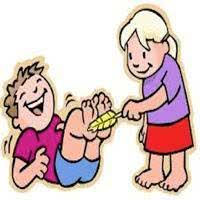

Cosquinha é uma grande inimiga das caras feias ao redor de todo o globo!

Essa situação comun para alguns, é algo muito irritante para outros e muitos tentam aprender a ficar imunes a esse risotroon 2000, mas por que sentimos cosquinha?
Quando sentimos cosquinha é isso que acontece: Algumas partes do nosso corpo têm alguns sensores táteis a mais do que em outros lugares, o que faz com que tenhamos essa sensação esquisita conhecida mundialmente como cossegas. Saber disso pode ajudar a muitas pessoas a lutarem contra muitos mau-humorados e espalhar risos por onde irem.
(escrito por Felipe Batista Barros)
(Clique aqui para ver mais curiosidades :)